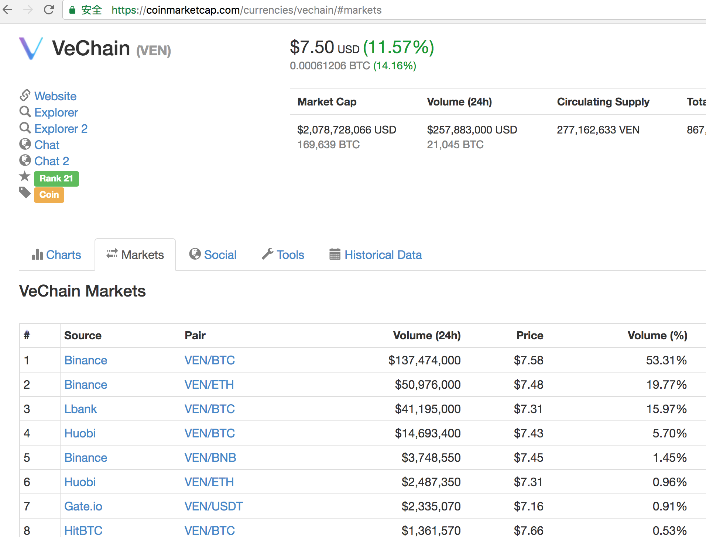

今年1月我原本计划学习cs231n、看paper，但无奈最终没有成行，原因就在于炒币。1月初的币市疯狂程度令人难以想象：各类山寨币的走势如梦一般，每天以20-30%的走势向上攀升，我手中的许多币在短短半个月内翻了5-6倍。当然持续近一周的矿难(至昨天)将一切还原成12月初的样子，但我相信比特币和各类山寨币仍然充满前景。
写这篇文章，一方面是应好友所托“想知道怎么入场买币？”，另一方面是对自己近一个月的看盘、探究心得体会的记录。注意此处不提供任何Financial Advice，一切币种的选择都需要你花功夫去了解。 我对区块链技术实在连入门都不算，所以我只会花很少一部分讲解“原理”部分(并且往往漏洞百出)，而把更多的时间用于“如何购买和交易？”，其中诸多理解不当之处，有待我后续修正。
1.什么是比特币&山寨币？
比特币(以下简称BTC)本质上是一种虚拟货币，总量只有2100万个，数值恒定。持有比特币的用户A转账1BTC给用户B，整个系统将为这次交易创建一个日志，并广播给整个网络的所有用户，每个持有比特币的人的账本上都会增加一条记录”A转账1BTC给B”
如果全世界的人都用比特币进行交易，那就不需要实体钞票了，也不用计算各种汇率。比特币对现有的银行体系最大的冲击有2点:
- 去中心化。想象一下今天你当地的中国银行突然发生火灾无法取款，或者中国银行突然被黑客袭击无法存取款怎么办？因为银行本身是中心化的，只要它停止运行社会就陷入混乱。但是比特币网络中，每个用户都管理一份账本，也就是每个节点都是一家银行，任何节点发生都不会影响服务，除非所有节点都挂了。
- 比特币永远不会贬值。因为总量恒定，所以它不可能像传统银行流通货币一样，受政府超发货币、暴乱、国家信用的影响而贬值。这也是政府痛恨它的地方，毕竟许多国家操纵货币发行使人民苦不堪言。
所以银行政府恨比特币。但区块链，以及去中心化(Decentralization)技术又是未来最有前景的技术之一(媲美人工智能)，其核心思想是摒弃目前的”C-S模型(服务器-用户)模型“，网络中的每个节点都拥有所有的数据，并不会存在某处挂了服务就瘫痪的情形。它和分布式网络的最大区别在于，它并不存在一个可调度的中心，且节点信息不可篡改——“链”结构的原理是每个节点都存着上一个节点的哈希值。
从比特币诞生一来，衍生出了许多其它币种，诸如以太坊ETH，莱特币LTC。原有比特币的缺点很明显:
- 转账手续费日益昂贵。比特币设计之初，为了奖励维护各个网络节点的人(我们称之为矿工)，每次转账交易的5%%会作为小费奖励给矿工，但是随着比特币价值(对实体货币)不断攀升，手续费越来越贵。
- 比特币转账速度慢。
- 51%法则。比特币为了统一整个账单体系的准确性，规定以全网计算量最大区块的“账本”作为标准账本。因此当你的计算力足够强，掌握了全网51%的计算力时，你就可以篡改账本。
最初诞生的这几种币都是比特币的改良版本(ETH是一个可编程平台)，但现在的这么多山寨币并不是，它们无意创建出一种新的货币打败比特币或者以太坊。这些山寨币同比特币最大的相同点是去中心化。而且每种币都有自己的应用场景。比如有的币是专用于航空领域的支付体系，有的币是用来做隐私保护。以一个我参与购买的(团队产品未按时公测，现已弃坑)币SUB为例：
SUB: 它其实旨在反抗国家的网络封锁而发行的一种货币，这个公司提供一种去中心化的解除互联网封锁的服务，你购买这种币来消费此服务。那这和普通的VPN有什么区别呢？我们知道本质上绝大部分VPN服务是指你通过”中间机器”来访问外部网络，位于中国的你请求youtube，其实是请求该机器，该机器正常访问youtube，再把信息传回来给你。为你提供VPN的往往是某家公司，它们的主机基本都是一个大的机器集群，一旦这家公司被政府勒令停业，或是这个网段的host被政府部门加入防火墙，VPN就挂了。去中心化的网络中，来自全世界的每台主机都能作为这个”跳板”服务器，而且政府无从封禁，因为除非把位于全世界各个节点的网络都封锁完。
这就是SUB的作用。
其它山寨币也各有用途，就不一一列举了。
2.如何购买各类主流币？
首先我来介绍如何购买BTC、LTC或者ETH，它们是连通各类山寨币和实体现金的“桥梁”。如果你位于美国并有相关证件，你可以登陆coinbase或者bittrex用现金购买这些货币即可。
如果你位于中国，目前支持支付宝/银行卡购买的网站有：
- Localbitcoins，这是一家2013年创办位于芬兰的在线比特币交易公司，我在上面交易过几次，体验还不错。
- Coincola，中国人办的网站。
- Huobi Pro，火币国际版。
以上三个网站的操作方式均大同小异：下单、付钱(注意是直接支付宝转账给对方)，然后收到币。读者可能有疑问，我私下里给对方转账，万一对方不认怎么办？我猜测对方的币应该必须在平台上，假如你付款了对方不发币，投诉后对方的币应该会被没收，这是支持对方如实交付币的最大动机。但以上3个平台都存在15-20%的溢价，即花费1万RMB最终只能买到价值8000多的币。(由此产生了"搬砖族"：拥有Coinbase账户原价购买BTC，然后在以上几个平台以15-20%溢价售卖。)
3.如何购买山寨币？
假设目前你已经通过以上方法购买了0.1BTC，那么如何入场山寨币呢？ 市面上的山寨币交易平台实在太多太杂了，此处不一一列出来。仅说几个我正在使用且币种较为丰富的平台吧：
- 币安。币安可以算所有山寨币交易网站的王者，优点是转账速度快、稳定并且国际化，缺点是许多“刚出炉”的冷门币种币安上基本没有，而且许多币只要一上币安就立即大幅增值甚至直接翻倍。总而言之，币安上的各类山寨币绝大部分都已经暴涨过一轮了。
- Livecoin。体验稍逊于币安但有更多冷门币种。
- 火币Pro
- OKEx
- Cryptopia
它们的使用方法很相似，如果你曾经有过炒股经历一定对如何交易并不陌生。注册完毕后，你会发现"Withdraw"和"Deposit"（即提现和充值）选项，这里的提现并非将币变成现金，而是将币从本平台传输到另一个平台，充值同理。重要步骤来了：从你购买ETH、BTC的平台里找到提现这一栏，并在你要存储的平台(例如币安)上找到对应币种的地址(如果还没有的话，一般可以点击"generate"生成一个新地址)，注意各类币种的地址均不相同，千万不要将BTC发送至ETH钱包！
一旦传输成功(BTC大约需要1-2h，ETH大约15分钟，LTC大约5-10分钟)，就可以在诸如币安等平台使用BTC/ETH购买山寨币种了。假如你看好某种币但又不知道在哪个平台购买它怎么办呢？你可以在coinmarketcap的markets栏下找到你看好的币目前可购买的平台。以VeChain为例:

我们可以看到它可以在Binance(币安)、Huobi Pro(火币)等平台购买。
4.如何入场ICO？
ICO全名为Initial Coin Offering，与众筹的性质很相似。如果你观看过许多山寨币的发展曲线，一定不会怀疑“在币市里ICO是暴富的最佳手段”。在ICO时的价格很低，等上交易平台时的”发行价“是ICO价格5-10倍的币不足为奇，许多所谓的“百倍币”从"ICO->上交易平台"就已经10倍了，所以在ICO时低价购买是你能参与某种新币投资的最佳时机。
我在哪里可以找到最新ICO的消息？
国内微信群里的私募信息我不是很了解，而且水比较深容易受骗，此处我只介绍通过官方渠道的ICO如何进行：
首先你可以在coinschedule上看到目前正在进行、即将举行的各类币种ICO的信息和团队简介，此外有几个ICO评分网站可供参考：
我觉得这些评分看看就好，如果想实际参与一定要自己花功夫去探究。
如何甄别ICO项目呢？
参与ICO的币种都有自己的官方网站，我认为官网里的信息最值得关注的因素如下：
- 团队。一般官网都会贴出团队成员的LinkedIn，我主要在意的是他们的学历情况和工作经验与当前工作是否相匹配，前者自不必说，如果团队里有Stanford、MIT毕业的成员，其他成员的水平大概率也不会太差。后者是指团队成员过往的工作经历能否对当前工作有帮助，例如你感兴趣的这种币是做“虚拟银行”的，如果团队成员里有曾在美联储、欧洲银行任高管的工作经历，一定是一个大大的加分项。还有一个值得注意的是Advicer
，很多团队都滥竽充数或者挂名几个重量级Advicer来标榜自己，但实际上这些Advicer有的研究方向根本无关，有的则真的只是空头挂名，例如John McAfee就曾吐槽自己在一天内收到6份邀约请他做Advicer。我认为好的Advicer标准是：既在自己的行业有一定知名度，又能切实地对团队所做的项目进行指导。(PS:我认为在官网刻意隐藏
团队信息的ICO项目大概率不值得投资) - 白皮书。这一点我自己其实也往往马虎掠过，通过白皮书基本可以了解全部细节：这个币种是干什么的、实现原理和未来的规划。作为门外汉我主要是看制作者的用心程度>_<，读者可以深入探究。
- RoadMap&社交媒体。RoadMap意即路线图，有清晰路线图肯定是加分项，另外你也可以大致了解团队未来的“大动作”发生在什么时候。关于社交媒体(例如官方Twitter、Telegram、Reddit节点)此处想表达的是，我们可以通过团队发布在社交网络上的信息、对社区用户提问的回应来侧面感受团队的整体氛围，辅助我们作出判断。
以上是我自己判别ICO项目的基本思路。那么如何实际参与ICO呢？
参与ICO项目
参与ICO项目其实并不难，在ICO结束前官网都会有入口，并给出教程指引你一步步进行，基本步骤就是你将ETH/BTC/LTC发送至指定账户，然后在24h内就将收到该ICO币。其中有一项值得注意：对于使用ETH参与的ICO项目，绝大部分项目都不接受你从交易平台账户(例如币安、火币)里直接发送ETH，所以你需要一个真正的ETH钱包。我推荐使用MetaMask，在Google插件里即可安装，注意保存好你的私钥。
以上就是我截止目前关于炒币的全部经验。另外，我在Youtube关注了几个有趣的频道主：
- Altcoin Buzz。看名字就知道他主要关注Altcoin(山寨币)，声音极富有磁性。
- Suppoman Udemy。风趣小哥，他每天做一次直播，主要介绍他看好的最近的ICO项目，以及CoinMarketCap上新鲜出炉的优质币种。
二人均给出了两点忠告，这也是我愿意分享给读者的：
- There is no financial advice, you must do research yourself before any investigation.
- You should never put more money into the market than you can afford to lose if it went to 0.